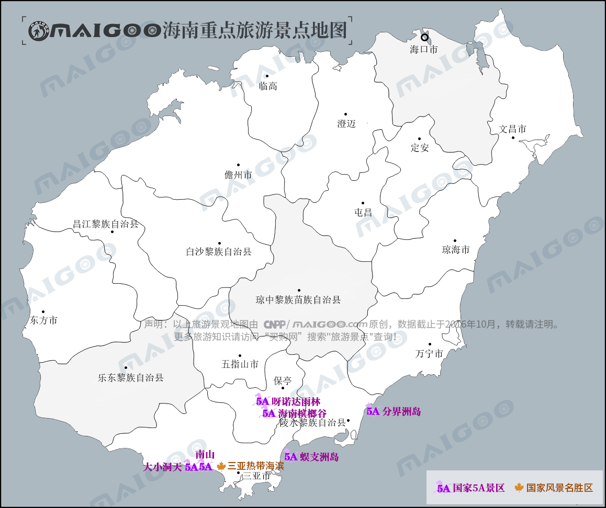

| | | | | |
| - | - | - | - | - |
|<b>别名</b>|琼、琼州、琼崖||<b>著名景点</b>|万绿园、铜鼓岭、博鳌、日月湾、五指山、分界洲岛、天涯海角等|
|<b>行政区类别</b>|省级行政区、经济特区、自由贸易港||<b>机 场</b>|海口美兰国际机场、三亚凤凰国际机场等|
|<b>所属地区</b>|中华人民共和国-华南地区||<b>火车站</b>|海口站、海口东站、三亚站等|
|<b>下辖地区</b>|4个地级市、5个县级市、4个县、6个自治县||<b>车牌代码</b>|琼A至琼F|
|<b>电话区号</b>|（+86）0898||<b>GDP</b>|4462.54亿元人民币（2017年）|
|<b>邮政区码</b>|570000至572900||<b>人均GDP</b>|48430元人民币（2017年）|
|<b>地理位置</b>|中国最南端||<b>高等学府</b>|海南大学、海南师范大学等|
|<b>面 积</b>|3.54万平方公里（陆地面积）||<b>省 树</b>|椰子树、黄花梨|
|<b>人 口</b>|925.76万（2017年）||<b>省 花</b>|三角梅|
|<b>方 言</b>|海南话/黎语/临高语/儋州话//军话/客家话等||<b>省委书记</b>|刘赐贵|
|<b>气候条件</b>|热带季风气候||<b>省 长</b>|沈晓明|
|-|-||<b>古今名人</b>|海瑞、丘濬、冯白驹、宋庆龄等|
|-|-||<b>海域面积</b>|约200万平方公里|
| <b>海南生活文化</b> | <b>海南特色文化</b> | <b>海南曲艺文化</b> | <b>海南建筑文化</b> | <b>海南宗教文化</b> |
| - | - | - | - | - |
| <a href="javascript:;" onclick="live(this);">习俗/民俗</a> | <a href="javascript:;" onclick="feature(this);">海南椰子文化</a> | <a href="javascript:;" onclick="art(this);">海南琼剧</a> | <a href="javascript:;" onclick="building(this);">海南建筑</a> | <a href="javascript:;" onclick="religion(this);">海南庙会</a> |
| <a href="javascript:;" onclick="live(this);">方言文化</a> | <a href="javascript:;" onclick="feature(this);">黎锦</a> | <a href="javascript:;" onclick="art(this);">崖州民歌</a> | - | - |
| <a href="javascript:;" onclick="live(this);">节日文化</a> | <a href="javascript:;" onclick="feature(this);">临高人偶戏</a> | - | - | - |
| <a href="javascript:;" onclick="live(this);">嫁娶文化</a> | <a href="javascript:;" onclick="feature(this);">黎族面具舞</a> | - |-|-|
| <a href="javascript:;" onclick="live(this);">饮食文化</a> | <a href="javascript:;" onclick="feature(this);">黎族纹身</a> | -|-|-|
| <a href="javascript:;" onclick="live(this);">海南禁忌</a> | - |-| -|-|
## <i class="fa fa-file-text-o"></i>&nbsp;目录（Table of Contents）
+ [I. 总路线图（暂无）](#one)
+ [II. 景点](#two)
+ [III. 路线规划（暂无）](#three)
<h2 id="two"><i class="fa fa-star-o"></i>&nbsp;景点</h2>
